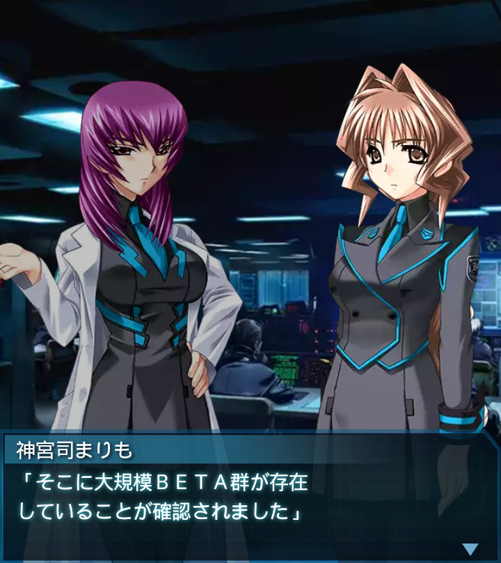
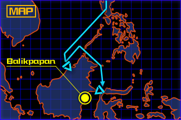
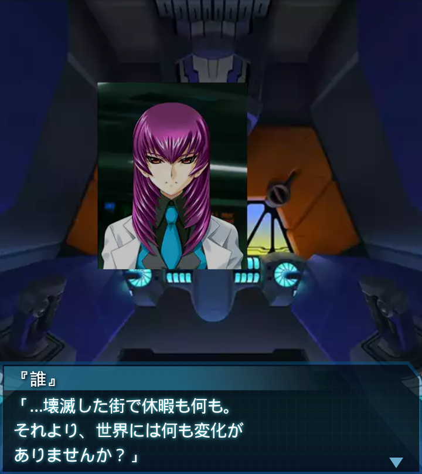
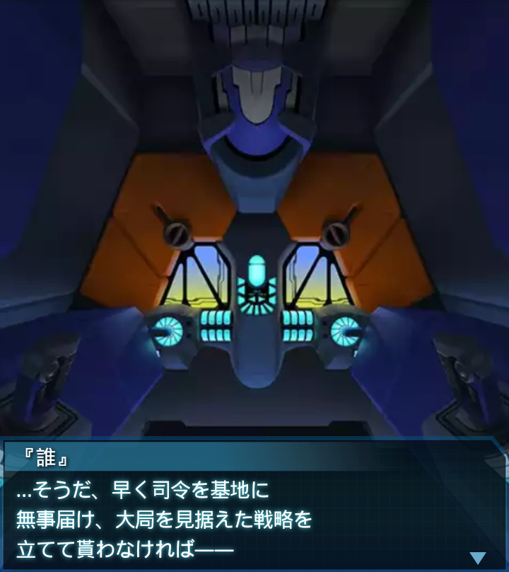

インドネシア・バリクパパン1
香月夕呼
「束の間の休暇を満喫してるトコ
悪いけど、あんたに一働きして
もらいたいのよ――まりも」
神宮司まりも
「このブルネイから見て、丁度
島の反対側に、バリクパパンと
いう都市があります」

神宮司まりも
「そこに大規模ＢＥＴＡ群が存在
していることが確認されました」
香月夕呼
「これはハイヴじゃない。例の
研究施設である可能性が
極めて高いわ」

『誰』
「なるほど。
この件、篁中尉や崔中尉には…」
香月夕呼
「明かす気はないわね。だから
あんたに行ってもらいたいのよ」
『誰』
「了解しました」
神宮司まりも
「島の中央には険しい熱帯雨林が
広がり、縦断は極めて困難です。
北回りの海路で移動となります」
『誰』
「…結構時間がかかるな。
では、準備が整い次第、早速
出動します！」

『誰』
「はい、司令の予想通り、例の
研究施設でした。旧須野村との
違いは特別ありません」
香月夕呼
「了解。レポート送っといて。
それじゃ休暇の続き満喫して
良いわよ～」

『誰』
「…壊滅した街で休暇も何も。
それより、世界には何も変化が
ありませんか？」
香月夕呼
「無いわね。２つ破壊した位じゃ
何も変わらない程、施設の数が
多いってことかもね」
香月夕呼
「とにかく今は、南極基地に
行くことが最優先よ。これ以上の
ロスは人類の存続に関わるわ」
『誰』
「そうですよね…わかりました。
それでは司令達の合流を
お待ちしています」

『誰』
…そうだ、早く司令を基地に
無事届け、大局を見据えた戦略を
立てて貰わなければ――
『誰』
そうしなければ、本当に人類は
滅亡してしまうかもしれない。
…俺が、やらなければ！